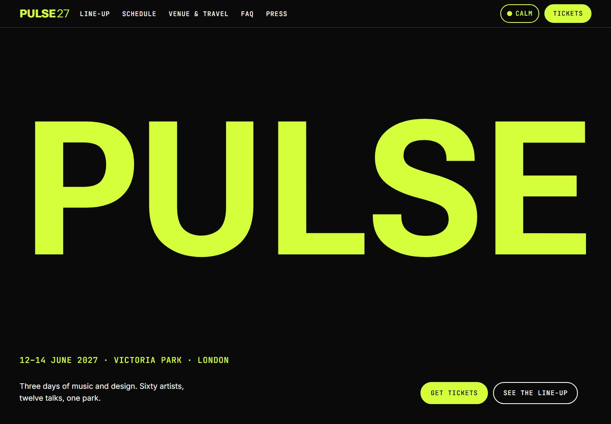

Design exploration / Kinetic typography
PULSE 27
A type-led festival website with a personal schedule, clash detection, and an offline-ready programme.

The idea behind the interface.
A fictional three-day festival website where variable typography becomes the main visual. Oversized lettering and day-specific palettes set the energy, while schedule planning, ticket information, and a calm mode keep the experience useful.
Inside the build
- A fit-text system accounts for variable-font width and weight, keeping reactive headlines within their containers.
- Visitors can save sets to My PULSE, see schedule clashes, and export their choices to a calendar.
- A service worker caches the programme for offline use; a lightweight queue page and visible-only ticket polling support the ticket journey.
Scope & context
Concept project. Festival details, artists, and ticket availability are demo content. Large-scale queue load testing is not claimed.